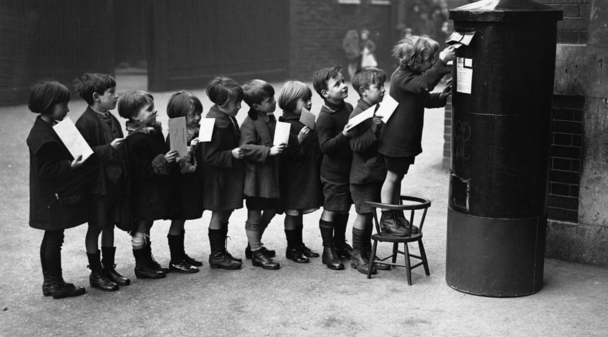

POSTA është kompani e themeluar në Kosovë, dhe operon në tregun e shërbimeve dhe dërgesave postare, në çfarëdo orari me çmimet më të volitshme.
Pako e vogël postare është dërgesë postare që përmban sende të ndryshme në sasi të vogla, si prodhime artistike, kaseta, disqe, CD, shirita magnetik, mostra tregtie ose pjesë të një sendi që shërben si mostër tregtie, pjesë këmbimi për aparatura, veshmbathje, duke përjashtuar çdo mundësi për tu përdorur për qëllime biznesi. Shuma e gjatësisë, e gjerësisë, dhe e lartësisë nuk mund të jetë më e madhe se 150cm, ndëra dimensionet më të vogla, se dimensionet e dhëna për letër dërgese ( 90 X 140mm). Në qoftë se pako ka formë cilindrike , shuma e gjatësisë dhe dy diametrave nuk mund të jetë më e madhe se 105 cm , ndërsa ato më të vogla deri në 17 cm, por se njëra nga këto përmasa minimale nuk mund të jetë më e vogël se 10 cm. Pesha max: 31.50 kg
Dërgesa thjeshtë: është dërgesa postare e cila me rastin e pranimit në zyrën – pikën postare,dërguesi ose shfrytëzuesi – konsumatori nuk kërkon ndonjë shërbim të veçantë nga operatori postar dhe për të cilën nuk i lëshohet dëftesë mbi pranimin e saj, ndërsa me rastin e shpërndarjes – dorëzimit nga marrësi nuk kërkohet të vërtetohet pranimi i saj.
Kartëpostalja: është dërgesë e hapur, ana e majtë e së cilës është e dedikuar për shënimin e tekstit, ndërsa ana e djathtë është dedikuar për adresën e marrësit.
